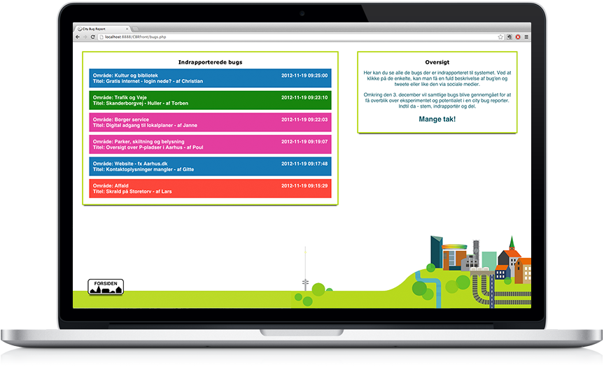
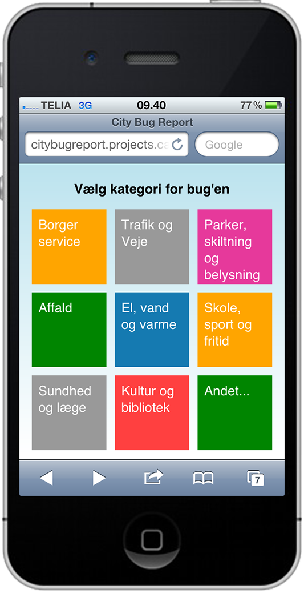
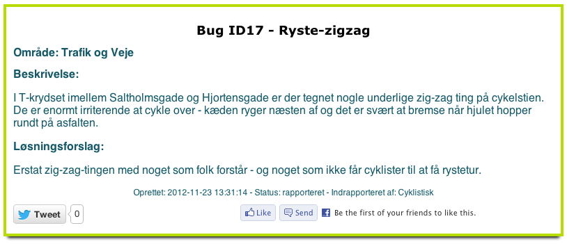
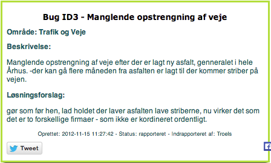

City Bug Report: Report Urban Issues
What happens if we crowd-source identifying, documenting and reporting potholes, broken streetlights and other urban issues with a city bug reporting platform?


In 2012 I participated in the Media Architecture Biennale in Aarhus, Denmark. As part of the biennale, we wanted to develop a few media architecture installations to promote the festival and show-case perspectives related to smart city approaches. We develop a project centered around the idea that citizens should be able to inform the city (municipality) about issues as ``City Bugs’’. The project consists of two components – a media facade installation and a bug reporting platform. The background was developed in collaboration with people from the citizen service department at the municipality of Aarhus and participants in a two-day workshop hosted by Smart Aarhus. I developed the initial idea and concept together with Martin Brynskov, and was technical lead on developing the service platform.
Urban Bugs
The platform borrows the notion of ‘bug’ reporting from the world of software and aim to enrol citizens in Aarhus as a help in identifying, qualifying and discussing urban and municipal issues.
When encountering an urban `bug’, citizens could report is using the online tool by selecting a category and provide a description and propose a solution. Once reported, the bug was available on the website and people could share it via social media. Each of the provided categories correspond to one of the responsible departments within the municipality, e.g. citizen service, waste management, culture and library services. The vision was that the reports could help management identify and prioritize issues, as well as provide more direct feedback to the citizens. Examples could be potholes, broken signs, missing translations, broken links etc.
I cannot take credit for any further developments1, but a representative from the citizen service section of the municipality told us that the project at the time inspired them to do further explorations into more direct digital participation from citizens. Today, the municipality of Aarhus still maintain the “postlist” service for citizen inquries and a modern hearing portal for public participation.
Examples and challenges
The platform was open for a couple of weeks and advertised in connection to the media facade installation on city hall. We recieved quite a lot of reports – with a significant amount of spam. A couple of examples are in figure Figure 2 below.


There are a few important lessons from implementing the system and engaging with the various stakeholders in the project. The system demonstrates that you can get qualified input from citizens, and I speculate, over time could have a more direct communication with citizens around urban issues. But, this comes with expectations that the issues are addressed, which in turn require significant design efforts on the organizational side. Often citizens report issues that the different municipal departs are already aware of and have procedures in place for handling. However, the reported bugs may interrupt existing procedures and priorities with the city – annual maintanence plans, budgets, political decisions etc. Designing the municipal interface and procedures to catch incoming reports would be a significant and complex undertaking that would involve developing a new administrative system, and rethinking part of the organizational design and flow, budgeting, decision-making and in some cases policy.
Implementation
The system was implemented as a traditional web-application with HTML/CSS/JavaScript on the client layer, PHP on the backend and a My SQL database as a persistence layer.
The C4 Container view looks something like figure Figure 3. The application did expose a REST api to the media facade on the City Hall, but we never linked the visualization because of the uncertainty in how many incoming bug reports we would receive. The connection to the municipal systems are speculative, but have been included in the diagram because that was a significant point of discussions with the stakeholders during and after the project.
Publications
There is more about the project in our MAB’2014 publication “City Bug Report: Urban Prototyping as Participatory Process and Practice” and my Master thesis “Digital Urban Development: Reconceptualising the Smart City as a Design Challenge from an Interaction Design Perspective”. You can also read a small piece on the project in our local news paper (in Danish).
Footnotes
The idea itself is perhaps not novel aside from the pragmatic inspiration casting urban issues as “bugs”. The devil is in the implementation and in particular the organizational integration. Turns out, that external requests wreack havoc on any existing development and maintanence plans and budgets.↩︎